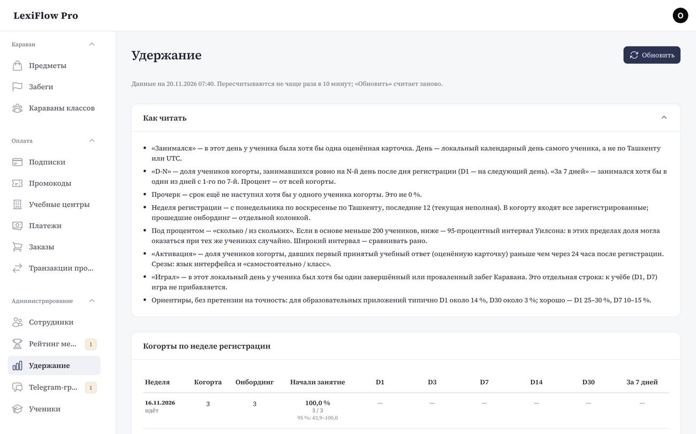
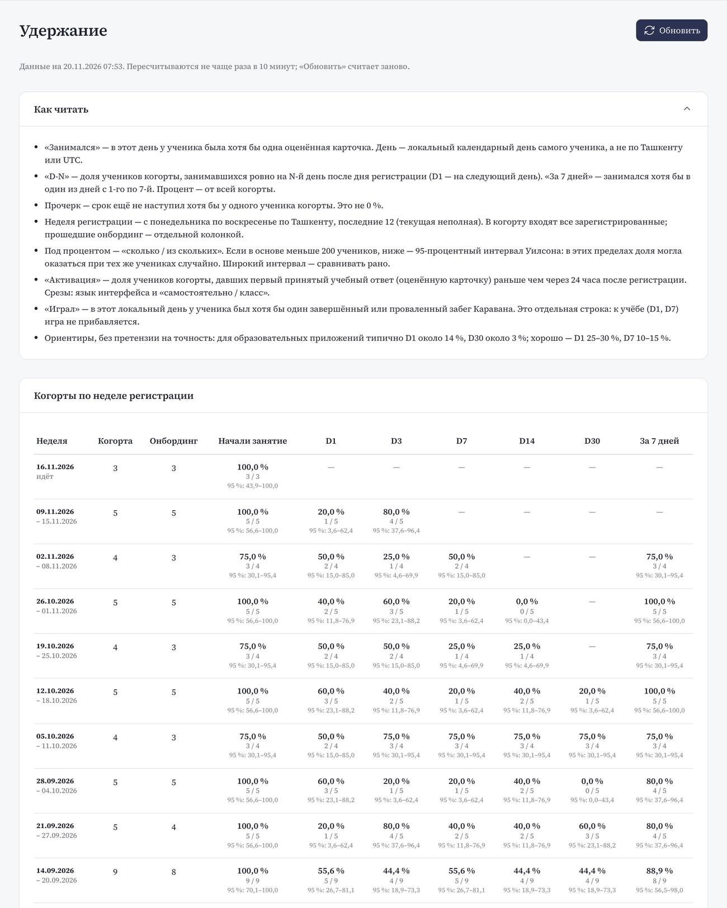

Раздел Администрирование → Удержание отвечает на один вопрос: возвращаются ли люди. Его сравнивают до и после изменений в обучении. Отчёт только читает данные, ничего не меняет; доступен только администратору.

Цифры пересчитываются не чаще раза в 10 минут — строка вверху говорит, на какое время они посчитаны. Обновить пересчитывает сразу.
| Понятие | Что значит |
|---|---|
| Занимался в день | в этот день у ученика была хотя бы одна оценённая карточка. День — местный календарный день самого ученика. Игра и практика сюда не входят |
| Когорта | ученики, зарегистрированные за одну неделю (понедельник–воскресенье по Ташкенту); последние 12 недель, текущая неполная. Удалённые ученики не считаются |
| D1, D3, D7, D14, D30 | доля когорты, которая занималась ровно на N-й день после дня регистрации (D1 — на следующий день) |
| За 7 дней | занимался хотя бы в один из дней с 1-го по 7-й |
| Прочерк | этот день ещё не наступил хотя бы у одного ученика когорты. Это не 0 % |
| «сколько / из скольких» и «95 %: x–y» | под процентом — числитель и знаменатель; если в основе меньше 200 учеников, ещё и интервал, в котором доля могла оказаться случайно. Если интервалы двух недель сильно перекрываются — разницы пока нет |

| Блок | Что показывает |
|---|---|
| Когорты по неделе регистрации | для каждой недели: сколько зарегистрировались, прошли онбординг, начали занятие (дали хотя бы один оценённый ответ), и D1–D30 |
| Активация за 24 часа | доля когорты, которая дала первый учебный ответ раньше чем через сутки после регистрации: всего, по языку интерфейса (русский / узбекский) и «самостоятельно / класс». «Класс» — ученик в первые сутки вступил в группу, привязанную к учебному центру |
| Учёба и игра: D1 и D7 | две строки на неделю: «Учился» и «Играл» (был завершённый или проваленный забег «Каравана»). Строки не складываются: игра не повышает D1 и D7 |
| Первое занятие | новички за 30 дней: открыли первую сессию, завершили, бросили, идут сейчас; медианы карточек и времени; «Сыграли ещё раунд сразу» (новая сессия раньше чем через 60 минут) и «Вернулись в течение 24 часов / 7 дней» (новая сессия не раньше чем через 60 минут) |
| Срез по языку и пробному Pro | D1 и D7 последних четырёх недель: интерфейс русский / узбекский, был ли пробный Pro |
Платформа умеет сравнивать два вида напоминаний ученикам: с вопросом по слову прямо в чате и обычным текстом «пора повторить». Каждый ученик закреплён за одним вариантом. Включает сравнение и задаёт дату начала технический администратор в настройках сервера.